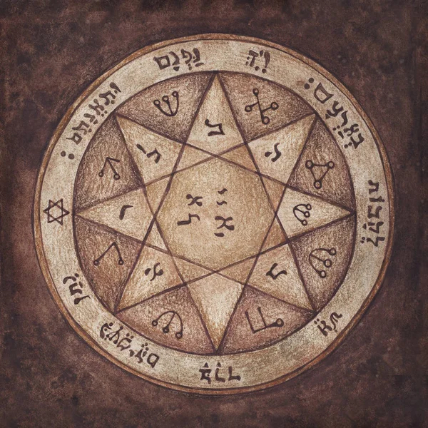

A Lenda do Rei Salomão
Prefácio
A lenda do Rei Salomão e os 72 demônios é um dos contos mais fascinantes da tradição esotérica e da magia cerimonial. Ela combina elementos da Bíblia, do folclore judaico e da literatura medieval.
Origem da Lenda
Fontes Bíblicas
• Rei Salomão: Salomão, filho de Davi e terceiro rei de Israel, é descrito na Bíblia como o mais sábio dos reis. Ele é conhecido por construir o Primeiro Templo em Jerusalém e por sua sabedoria e justiça.
• Testemunhos de Sabedoria: Os textos bíblicos, como o Livro dos Reis e os Provérbios, destacam a sabedoria de Salomão.
Literatura Extra-Bíblica
• Talmude e Midrash: Textos rabínicos que mencionam os poderes mágicos de Salomão, incluindo seu controle sobre os demônios.
• Testamento de Salomão: Um texto pseudepigráfico do século II ou III que detalha como Salomão usou um anel mágico dado pelo arcanjo Miguel para controlar os demônios e construir o templo.
O Anel de Salomão
Descrição do Anel
• Anel Mágico: Segundo a lenda, o anel dado a Salomão pelo arcanjo Miguel tinha o Selo de Salomão (um hexagrama ou pentagrama) gravado nele, permitindo-lhe controlar demônios.
• Poderes do Anel: O anel dava a Salomão o poder de invocar, controlar e banir demônios, forçando-os a realizar tarefas para ele.
Os 72 Demônios
O Livro da Clavícula de Salomão (Clavicula Salomonis)
• Chave Menor de Salomão (Lemegeton): Um grimório que descreve 72 demônios, incluindo seus nomes, selos, poderes e modos de invocação. Esse grimório é uma das principais fontes de conhecimento sobre os demônios associados a Salomão.
• Hierarquia dos Demônios: Os demônios são organizados em uma hierarquia complexa, com reis, príncipes, duques e outras classes.
Principais Demônios
Os demônios mais conhecidos e suas características:
• Bael: Primeiro espírito mencionado, rei que comanda 66 legiões de demônios. Ele pode aparecer em várias formas, incluindo um gato, sapo ou homem.
Representação de Bael• Agares: Duque que comanda 31 legiões de demônios. Pode ensinar línguas e causar terremotos.
• Vassago: Príncipe que comanda 26 legiões. Conhecido por sua habilidade em revelar coisas escondidas e futuros eventos.
• Samigina: Marquês que comanda 30 legiões. Pode ensinar ciências liberais e dar respostas sobre espíritos falecidos.
• Marbas: Presidente que comanda 36 legiões. Pode curar ou causar doenças, revelar segredos ocultos e transformar homens em outras formas.
• Amon: Marquês que comanda 40 legiões. Pode reconciliar amigos e inimigos e responder perguntas sobre o passado e o futuro.
Representação de Amon• Buer: Presidente que comanda 50 legiões. Conhecido por sua habilidade em curar e ensinar filosofia natural e moral.
• Gusion: Duque que comanda 45 legiões. Pode responder perguntas sobre o passado, presente e futuro e reconciliar amigos.
• Sitri: Príncipe que comanda 60 legiões. Pode causar amor entre homens e mulheres e revelar segredos.
Representação de Sitri• Beleth: Rei poderoso que comanda 85 legiões. Conhecido por causar amor e desejo.
Significado Esotérico
Simbolismo
• Selo de Salomão: O símbolo gravado no anel de Salomão é frequentemente associado ao controle sobre forças espirituais e à harmonia entre opostos (masculino e feminino, espiritual e material).
• Domínio sobre o Mal: A capacidade de Salomão de controlar demônios simboliza o domínio da sabedoria e da luz sobre as forças das trevas e da ignorância.
Uso na Magia Cerimonial
• Invocação e Banimento: Os grimórios de Salomão, como o Lemegeton, são usados na magia cerimonial para invocar e controlar espíritos, seguindo rituais específicos para garantir proteção e eficácia.
• Propósito Espiritual: Para praticantes esotéricos, o controle de demônios representa a conquista de desafios internos e o aperfeiçoamento espiritual.
Reflexão
A lenda do Rei Salomão e os 72 demônios é uma rica tapeçaria de sabedoria, poder e controle espiritual. Salomão, através de seu anel mágico e sabedoria divina, é um símbolo de como a inteligência e a fé podem dominar as forças do mal. Essa lenda tem sido uma fonte de fascinação e estudo para esoteristas e ocultistas ao longo dos séculos, oferecendo lições sobre poder, responsabilidade e a busca pelo conhecimento espiritual.